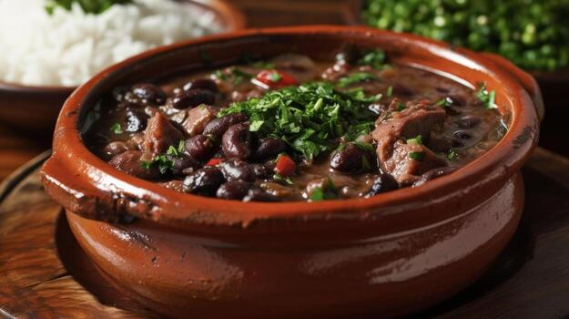

Sabores deliciosos. Momentos inesquecíveis.
Somos um restaurante comprometido com a experiência do cliente, equilibrando preço e sabor em cada prato, criando memórias à mesa.
Reserve sua mesaConfira os nossos pratos

Frango assado ao molho
Serve: 3 pessoas
R$ 120,00

Costela grelhada
Serve: 2 pessoas
R$ 98,00

Pizza napolitana
Serve: 2 pessoas
R$ 65,00

Feijoada completa
Serve: 4 pessoas
R$ 145,00
Tilápia empanada
Serve: 1 pessoa
R$ 49,00
Macarrão a bolonhesa
Serve: 4 pessoas
R$ 165,00
Sobre nós
Nosso restaurante possui uma equipe de cozinheiros argentinos, especializados em pratos da região, como feijoadas, carnes nobres e frangos. Com a influência de quem percorre toda a América Latina, nossos chefs buscam aprimoramento constante, incorporando novos sabores e ingredientes aos pratos totalmente artesanais.
O que nos torna especiais?
Nossa história
Desde 1988, a marca cresceu com tradição, paixão e um toque argentino que encanta gerações.
1988
O restaurante abre as portas, fruto do sonho de dois argentinos, El Ricóin e Chapo, irmãos de sangue, que, ensinados pela mãe a cozinharem, levaram o sonho para o seu trabalho.
1995
Com o sucesso estrondoso das empanadas e dos cortes de carne típicos que traziam o sabor autêntico de Buenos Aires, o pequeno salão inicial já não dava vazão à clientela. Os irmãos decidiram expandir, inaugurando uma charmosa área externa com videiras e música ao vivo, transformando o restaurante em um ponto de encontro cultural e gastronômico na cidade.
2005
A tragédia e a superação marcaram este ano. Após o falecimento precoce de El Ricóin, Chapo pensou em fechar as portas. No entanto, o apoio massivo dos clientes fiéis e a entrada de sua sobrinha, Valentina, na cozinha trouxeram fôlego novo ao negócio. Valentina combinou as receitas tradicionais da avó com técnicas contemporâneas, rendendo ao restaurante sua primeira estrela em guias gastronômicos locais.
2018
Celebrando 30 anos de história, a marca se consolidou como um patrimônio da culinária argentina na região. Para comemorar, foi lançado um livro de memórias e receitas, além de uma reformulação no menu que resgatou os pratos primeiramente servidos em 1988, mantendo vivo o legado e o tempero da matriarca da família.
O que os clientes dizem
O atendimento foi excelente — os pratos chegaram rápido e bem temperados.
Pedro, 21 anos
A costela estava no ponto certo, com aquele sabor defumado incrível. Voltarei com certeza.
Mariana, 34 anos
Ambiente aconchegante, preço justo e sabor de comida caseira. Difícil encontrar isso hoje em dia.
Carlos, 47 anos
Reserve a sua experiência
Preencha o formulário ao lado para reservar uma mesa. Confirmaremos pelo WhatsApp em até 1 hora.